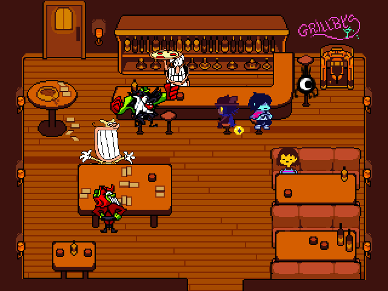
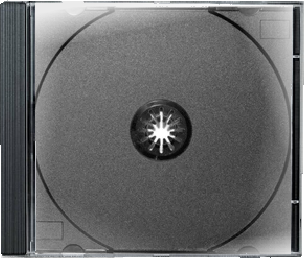

ùÜï The game will begin shortly - Super Bo Noise~
Forgotten by Salt
Hello this is a page where there bunch of old and unused content now no longer used and scrapped stuff that didn't make it or just never finished.(this entire thing was based on ThatPizzaTowerFan's Unused, Old & Scrapped Gallery)
"Gillery.png"
Unfinished picture that was supposed to be used for Fandom Page, earlier idea was an Deltarune Elevator where the button are the Fandom Icon, that was scrapped for many reason.
Delisted Project Thumbnail


DiscCase.png
Supposed to be used on Featured Project but didn't know how to move the disc properly and doesn't look good.